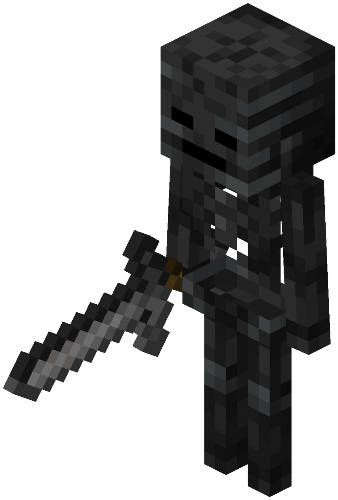

스폰
[자연 생성]
스켈레톤은 오버월드 내 밝기 7 이하의 장소에서 자연적으로 생성된다. 밤, 동굴, 폐광 등 어두운 공간에서 자주 등장한다.
스폰은 풀 블록 위에서 이루어지며, 주변에 충분한 공간이 필요하다. 지상에서 1~4마리씩 무리지어 생성되기도 한다.
[몬스터 생성기]
던전 구조물 내부에는 스켈레톤 몬스터 생성기가 있을 수 있으며, 이곳에서는 지속적으로 스켈레톤이 생성된다.
[햇빛]
낮에는 햇빛에 노출될 경우 불타지만, 헬멧을 착용하고 있을 경우에는 피해를 받지 않는다.

위더 스켈레톤
생명력: 20 (♥ × 10)
행동: 적대적
공격력: 5 (위더 효과)
방어력: 2 (🛡)
생성: 네더 요새 내